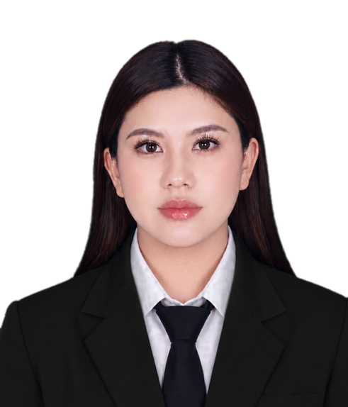

Person in Charge of the School Christmas Celebration
Entrusted with the preparation and smooth execution of the school's annual Christmas celebration, including the venue, program, and event logistics, together with fellow committee members.

Informatics Engineering student at Universitas Negeri Surabaya.
I am an Informatics Engineering student at Universitas Negeri Surabaya with a solid foundation in software engineering, database systems, and programming logic. I am passionate about IT innovation, adapt quickly to new digital tools, and enjoy working in teams in an analytical and systematic way.
Entrusted with the preparation and smooth execution of the school's annual Christmas celebration, including the venue, program, and event logistics, together with fellow committee members.
Documented youth activities through photos and videos, and created and edited short-form video content for the organization's social media platforms.
Entrusted to take and collect photos at various school events, then select, crop, and organize the final images to share with teachers and students.
Open to project collaboration, internships, or conversations about Informatics. Feel free to reach out by email or through the links below.
Send email Download CV